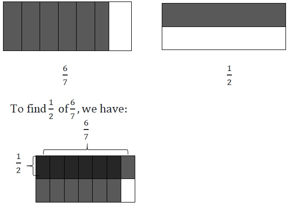
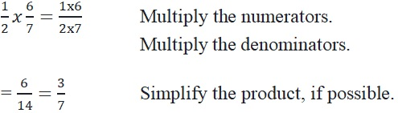
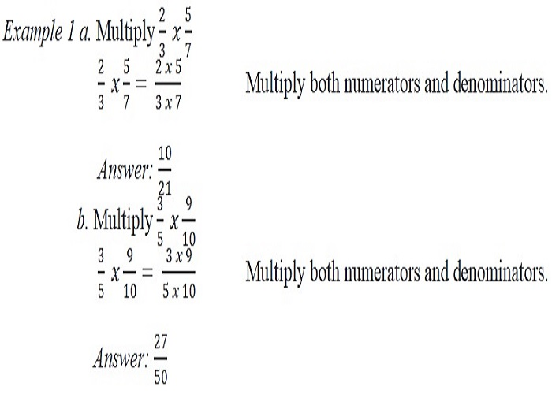
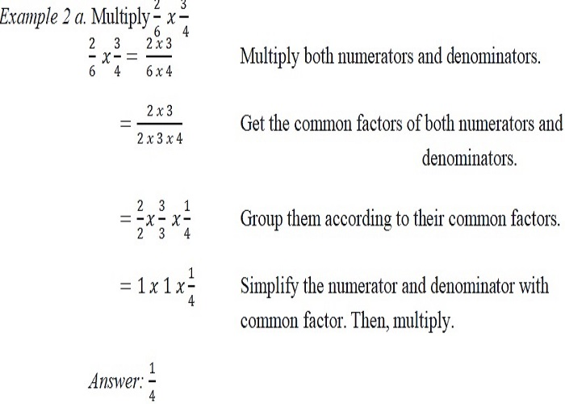

ENGAGE
Mary has 6/7 kg of sugar.She used 1/2 of it for champorado.How much sugar did Mary use for champorado?
EXPLORE
The illustrations below illustrate the given fractions.
After overlapping the models for 6/7 and 1/2, the double-shaded part represents 6/14 of the whole. 6/14 is also equal to 3/7.
Answer: Mary used 3/7 kg of sugar.
We can also solve the problem this way:
EXPLAIN
Let us visualize the product of two fractions. We consider the multiplication sentence1/2 x 1/3.
This is equivalent to 1/2 of 1/3.
This leads us to the steps for multiplying a fraction by another fraction.
To multiply fractions: 
1. Multiply the numerators.
2. Multiply the denominators.
3. Simplify or write the product in lowest terms, possible.